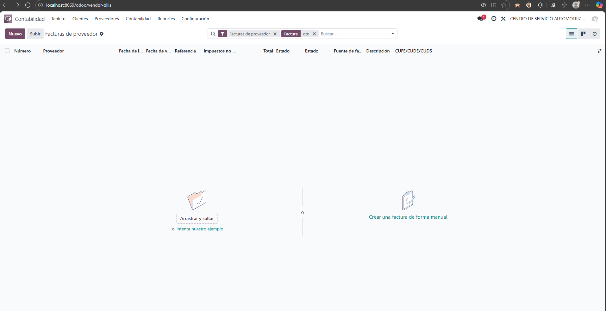
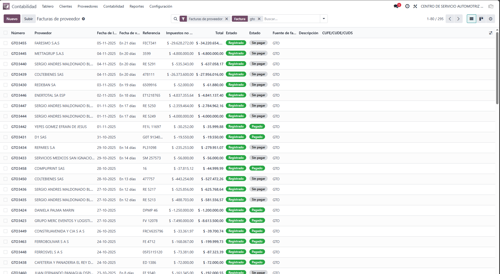
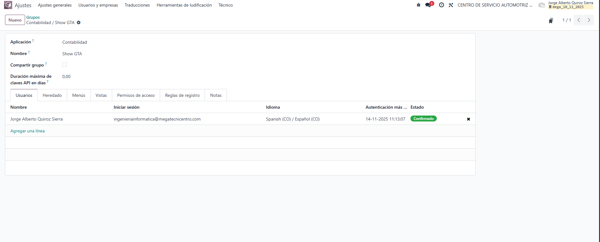

Descripción general
Este módulo permite ocultar el diario de gastos (u otros diarios seleccionados) para la mayoría de usuarios, mostrando dicho diario únicamente a los usuarios autorizados mediante un grupo de seguridad.
Es ideal cuando se manejan facturas especiales (por ejemplo, gastos administrativos, GTO, etc.) que solo cierto personal debe visualizar.
Características principales
- Oculta el diario de gastos para usuarios sin permisos especiales.
- Respeta la visibilidad configurada en el diario (campo Visible / Mostrado en el tablero).
- Basado en grupos de usuarios: fácil de administrar desde Ajustes > Usuarios y compañías.
- Compatible con Odoo 18 / 19 Enterprise (contabilidad).
Paso 1. Activar la visibilidad del diario en Contabilidad
Primero verifica que el diario que quieres controlar (por ejemplo, Gastos / GTO) esté marcado como visible en el tablero de diarios.
- Ve a Contabilidad > Configuración > Diarios.
- Abre el diario de gastos (GTO) que deseas controlar.
- Asegúrate de que el campo equivalente a Mostrar en el tablero / Visible esté en True.
- Guarda los cambios.
Paso 2. Revisar el grupo de permisos del módulo
El módulo crea un grupo específico (: Show GTA) que se usa para determinar quién puede ver el diario.
Desde el menú de grupos de seguridad podrás revisar el grupo y los usuarios asociados.
Usuarios sin grupo
Vista de grupos en Odoo
Usuario dentro del grupo
Resultado final
Una vez configurado:
- Los usuarios con el grupo asignado verán el diario de gastos (GTO) normalmente.
- Los usuarios sin el grupo no verán el diario en la lista ni en el tablero de Contabilidad.
Mega - Hide Journal GTO
Control sencillo y seguro sobre quién puede ver tus diarios de gastos.